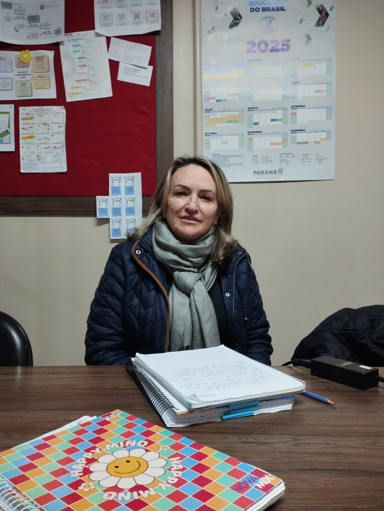

Entrevista com uma das primeiras alunas.
Entrevistamos a professora Marlene Herculano que foi uma das alunas da primeira turma que se formou no CENE no ano de 1974. As perguntas foram direcionadas ao período em que a Professora esteve como aluna no colégio e aos dias atuais.
Minha impressão era maravilhosa sobre o colégio, pois eu gostava de estudar.
2- Como era o colégio na época que você estudou?O colégio tinha poucas salas e poucos alunos, e as salas eram de alvenaria e outras não, os professores eram muito rígidos.
3- Qual era a matéria que você mais gostava?Na época era português.
4- Como era a relação entre professores e colegas naquela época?Era respeito mútuo com ambas as partes.
5- Você tem alguma lembrança especial ou histórias marcantes que viveu no colégio?Uma das histórias marcantes eram sessões literárias sobre textos que a gente apresentava sobre poesia e música dramatizadas.
6- Como você acha que o colégio evoluiu desde então?Evoluiu muito por causa das tecnologias, agora os alunos são muito digitais e naquela época nem internet tinha/ existia.
7- Que conselhos você daria para os estudantes atuais?Focar nos estudos e se organizar. Disciplina para estudar para o ENEM, pois o ENEM abre muitas portas.
8- Como foi a sua experiência ao ser uma aluna da primeira turma do colégio?Foi legal e ótima, a gente queria estudar muito, eu gostava muito, pois havia projetos, os eventos eram formaturas.
9- Você participou de algum evento ou projeto importante na época?Na época caiu um avião aqui perto e daí foi feito uma redação sobre. E também na apresentação de 7 de setembro sobre as riquezas do brasil eu fui o algodão.
10- Gostaria de compartilhar alguma mensagem para as futuras gerações de estudantes?Sejam felizes e vivam com intensidade, disciplinados com tudo o que fizerem, sejam verdadeiros uns com os outros.